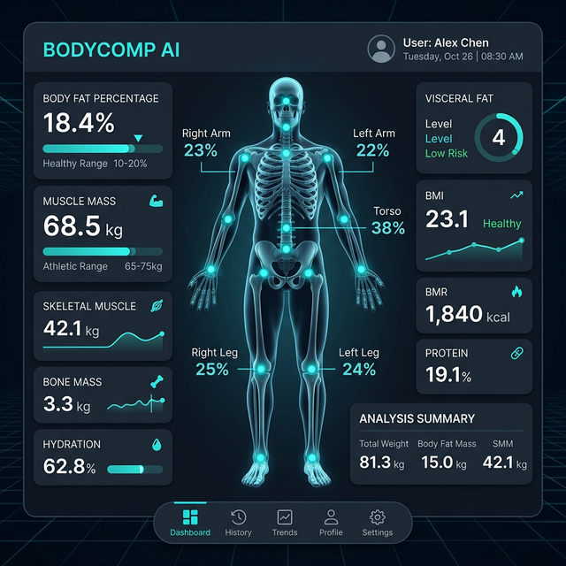

Body Tracking App
AI-driven body metrics and composition analysis.
Overview
Leveraging AI and computer vision models, this application provides accurate body composition tracking from skeletal data and user inputs. It helps users understand their physical progress over time.
Key Features
- AI Skeletal Analysis
- Metrics History
- Goal Setting
- Privacy-first Local Processing
Tech Stack
TensorFlow.js
Python
React Native
AWS
